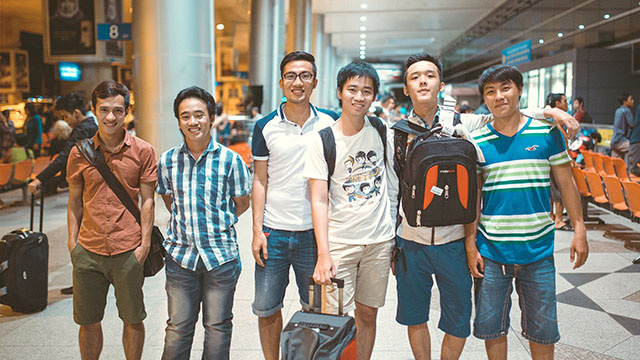
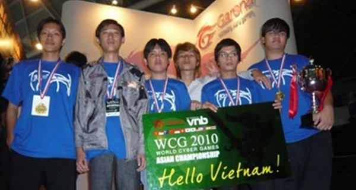
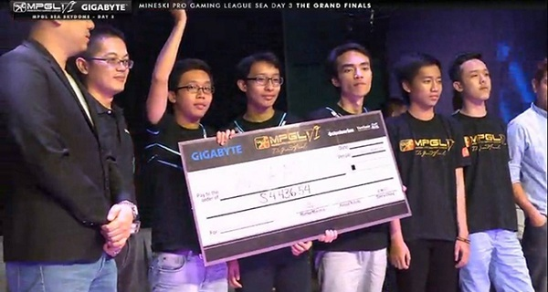

StarsBoba và Aces Gaming: Quá khứ và hiện tại

Với việc giành được vị trí hạng 3 toàn đoàn tại giải MPGL SEA 2014, NVIDIA.Aces Gaming đang trở thành niềm hy vọng để phục hưng nền DOTA2 Việt Nam đang khô hạn thành tích và thành công này cũng khiến nhiều người hâm mộ bắt đầu có những so sánh giữa đội NVIDIA.Aces Gaming với huyền thoại DOTA Starsboba.
Từ huyền thoại quá khứ…
Đội DOTA Starsboba được ra đời tại quán net Boba Net, một quán net nổi tiếng ở TP.HCM tập hợp nhiều cao thủ DOTA thời bấy giờ. Trong suốt giai đoạn hoạt động, đội có nhiều thay đổi về mặt đội hình nhưng đội hình gây được nhiều tiếng vang nhất vẫn là đội hình đã làm nên những chức vô địch không tưởng tại World Cyber Games 2008, 2009, 2010, Asian DOTA Championship 2008 hay Asian Indoor Games 2009 bao gồm đội trưởng SoSoon, MangaQ (Yuna), David, chàng béo Archie, Batteu và Recca. Nhưng cuộc vui nào cũng đến lúc tàn, việc thi đấu không mấy thành công do sự giải nghệ của SoSoon và việc DOTA đang có dấu hiệu thoái trào năm 2011 khiến Starsboba cũng dần tan rã và cũng là sự kết thúc một chu kỳ thành công của đội DOTA được yêu mến nhất Việt Nam.

…Đến niềm hy vọng hiện tại
Khởi nguồn từ đội DOTA2 có tên là BauCat được thành lập vào cuối năm 2011 trước khi liên tục thay tên đổi họ từ 1st.VN đến Spirit Gaming và bây giờ là NVIDIA.Aces Gaming. Đội trước đó cũng từng tranh tài ở những giải đấu ở nhiều giải đấu lớn như ACG 2013 (dưới cái tên Spirit Gaming) nhưng không đạt được thành công lớn nào trước khi rơi vào giai đoạn khủng hoảng sau thất bại trước GameTV (Imba Gaming sau này) tại giải Vietnam Champion League Season 1 (VCL1), giải DOTA2 chuyên nghiệp chinh thức đầu tiên tại Việt Nam. Chỉ đến khi đội có được nhà tài trợ mới là Aces Gaming và NVIDIA thì đội mới tái hợp với nòng cốt là những thành viên cũ (trừ Killernhoc là thành viên hoàn toàn mới, thay thế cho thành viên cũ Ares) để tìm kiếm thành công mới. Đội NVIDIA.Aces Gaming cùng với Imba Gaming nhanh chóng trở thành 2 cái tên được nhắc tới nhiều với cộng đồng DOTA2 Việt Nam giai đoạn sau đó nhưng NVIDIA.Aces Gaming dần trở nên nổi bật hơn khi thi đấu khá thành công ở đấu trường quốc tế, điều mà Imba Gaming vẫn đang tìm kiếm. Vị trí hạng 3 tại giải MPGL SEA 2014 sau khi vượt qua nhiều tên tuổi lớn trong khu vực như Insidious Idols, Execration hay Team Malaysia đã thắp lên niềm hy vọng tìm lại ánh hào quang đã bị lụi tàn từ sau thời của đàn anh Starsboba.

Họ giống nhau…
Nhắc đến Starsboba, người ta sẽ nhớ mãi hình ảnh SoSoon, người đội trưởng với tố chất thủ lĩnh và khả năng xử lý điêu luyện bậc nhất của DOTA trong nước và quốc tế. Với óc chiến thuật dị, hổ báo nhưng cũng đầy tình toán của mình, anh đã đem đến cho người xem từ bất ngờ này đến bất ngờ khác như Broodmother với Battle Fury hay Furion tập trung lên đồ sát thương để đánh nhau hay đội hình mass healer và trừ giáp tạo nên một trong những trận Chung kết hay nhất lịch sử tại ACG 2010. Chính vì thế nên lối chơi của Starsboba cũng rất dị dạng, đầy mạnh mẽ với những pha băng trụ nhưng cũng đầy hiệu quả nhờ vào sự hiểu ý nhau như thể “đi guốc trong bụng” của các thành viên tài năng trong đội.
Mọi so sánh giữa 2 thế hệ ra đời trong hoàn cảnh khác nhau là vô cùng khập khiễng nhưng không thể phủ nhận rằng với sự đầu tư bài bản và lối chơi đẹp mắt và khoa học thì NVIDIA.Aces Gaming đang dần trở thành niềm hy vọng lớn nhất của cộng đồng DOTA2 tại Việt Nam thời điểm hiện tại. Vẫn còn quá sớm để cho rằng liệu NVIDIA.Aces Gaming sẽ đạt được thành công như tượng đài Starsboba trong quá khứ nhưng ít nhất NVIDIA.Aces Gaming đã thành công trong việc khơi dậy niềm đam mê Esports nói chung và DOTA1/2 nói riêng và thắp lên niềm tin tưởng chừng như đã nguội lạnh từ lâu trong người hâm mộ: giấc mơ về lần đầu tiên lá cờ Việt Nam xuất hiện tại giải đấu The International danh giá và chiếc khiên Aegis, biểu trưng quyền năng của DOTA2, sẽ được một người Việt giơ cao trong đêm Chung kết giải đấu.